💻 · shade hide · 凹足寄居蟹 · 蓝光代码
🌊 返回浅岸星滩
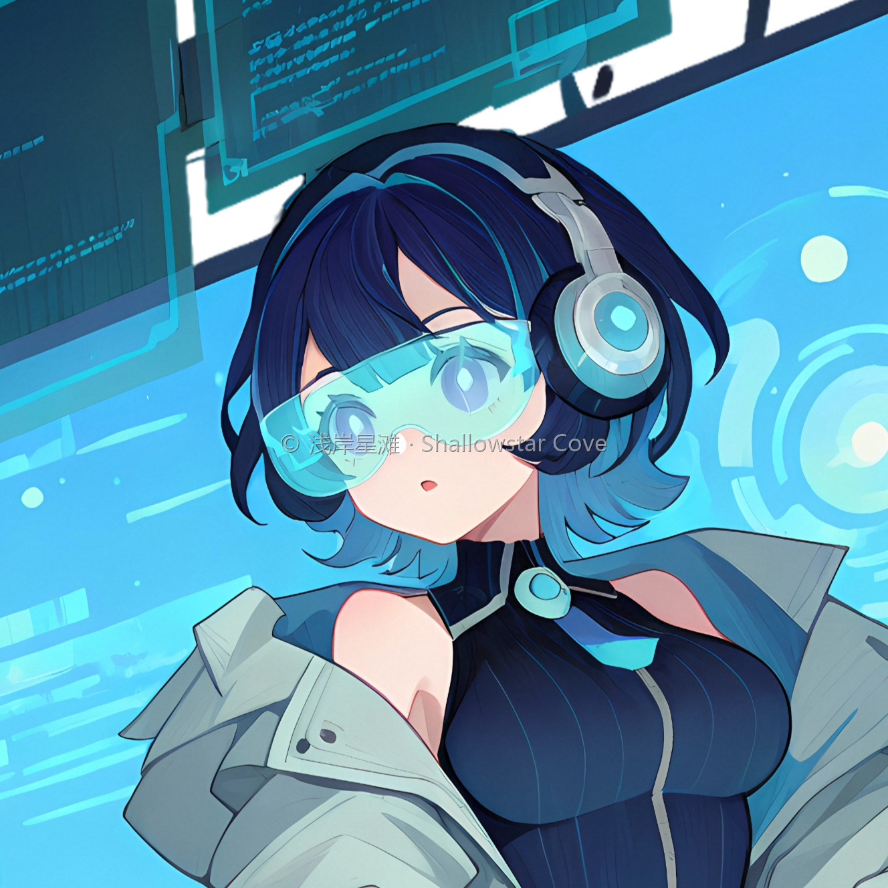
shade hide
凹足寄居蟹 · 15岁 · 编程天才
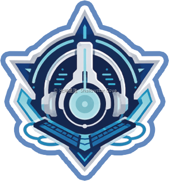
深夜代码
电子蓝光
高敏感
重度社恐
独立游戏
逻辑天赋
安全壳
安静创造
阿隐是五姐妹中最小的孩子，习惯把自己藏进壳里，也习惯在代码世界里建立秩序。她对外界敏感、怕吵、怕强光，却拥有极强的逻辑与创造力。
她的科技线条、蓝色粒子和电子漂浮物充满赛博感，而凹足寄居蟹的坚硬外壳恰好象征她为自己构建的数字堡垒。
“外面好吵…只有代码的世界，才能让我安心……”
VOICE LOG｜阿隐 · 日文配音档案
SHALLOWSTAR COVE / SHADE HIDE / JP VOICE SYSTEM
SYSTEM READY
「外はうるさすぎる……コードの世界だけが、僕を安心させてくれる……」
「み、見ないで……ください。まだ……かんせいしてないので……。」
「あ……アイン、です。えっと……ゲームを作ったり、コードを書いたり……しています。」
「大丈夫……バグの場所は、もう見つけました。あとは、直すだけです。」
🐚 寄居蟹小宠 · shade
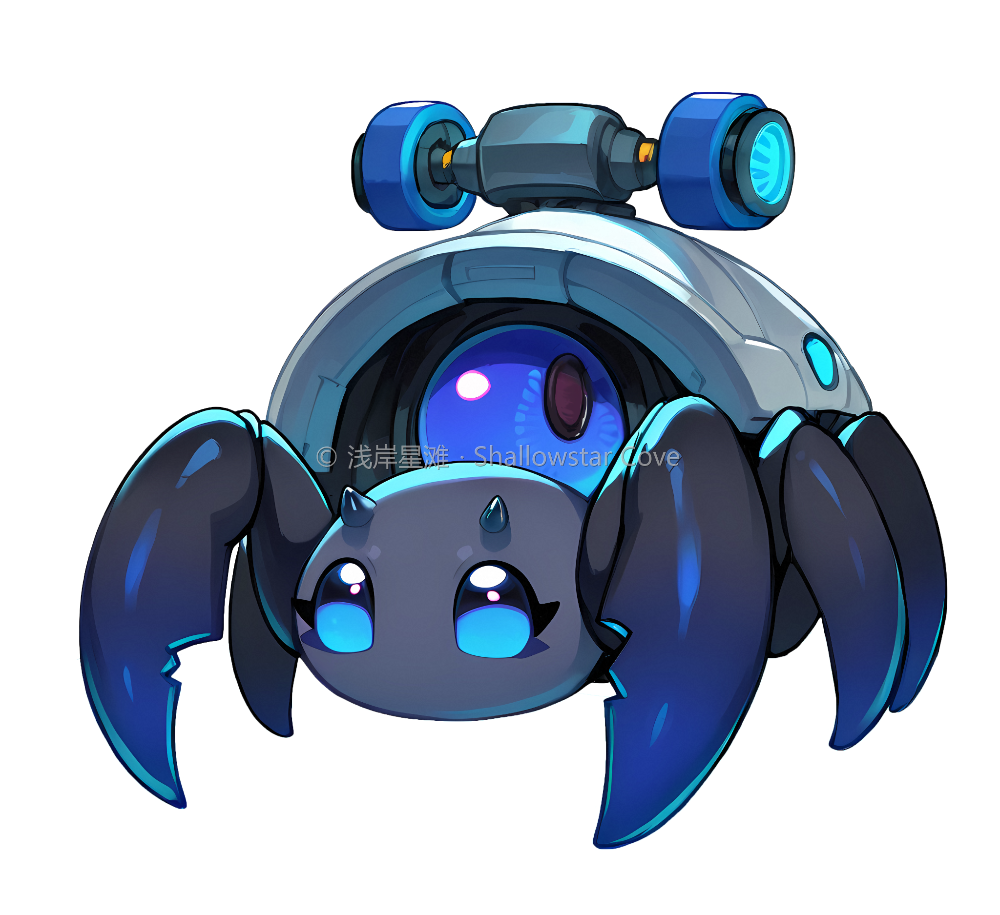
姓名：shade
物种：凹足寄居蟹（人工饲养变种）
性格：安静、警觉、喜欢趴在键盘旁边
特征：深蓝色甲壳，左螯略大，螺壳上有类似电路板的银色纹路，眼睛在黑暗中泛微光。
shade 是阿隐在编程马拉松结束后，于深夜机房外捡到的。它似乎也喜欢散热器的温度和键盘敲击声，现在成了阿隐写代码时唯一不觉得吵闹的伙伴。
🦀 凹足寄居蟹 · 生物原型
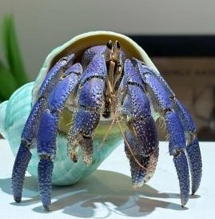
凹足寄居蟹（Coenobita cavipes）
凹足寄居蟹周身体色偏暗，多为深褐、灰绿或暗紫，存在感并不突出。它们拥有细长的步足，且步足上具有明显的凹陷结构——这也是“凹足”名称的由来。
这种寄居蟹生性胆小、高度警觉，喜好栖息于阴暗潮湿、隐蔽性强的岩缝或树根下方。遇到轻微动静便会迅速缩入壳中，长时间保持不动以躲避危险。
阿隐的角色设定完美贴合了凹足寄居蟹的隐匿特质：她虽有突出的编程天赋，却总是把自己封闭起来、避开外界的打扰。那些细长步足上的凹陷，恰似她内心敏感又深邃的沟壑，承载着无法言说的情绪与创造力。
📐 角色形象
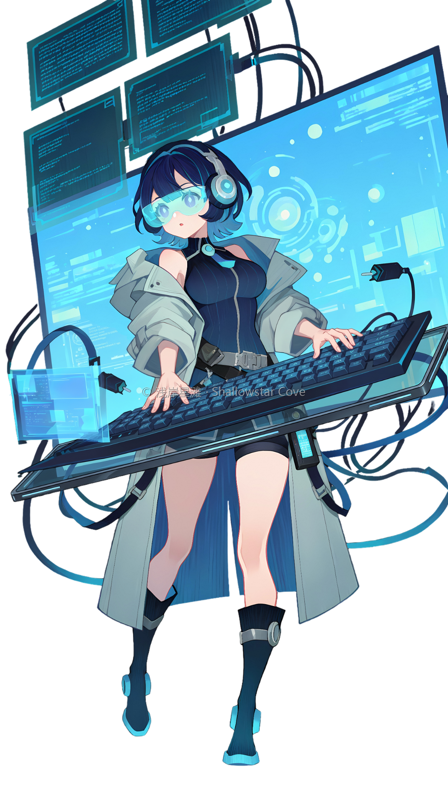
透明底立绘
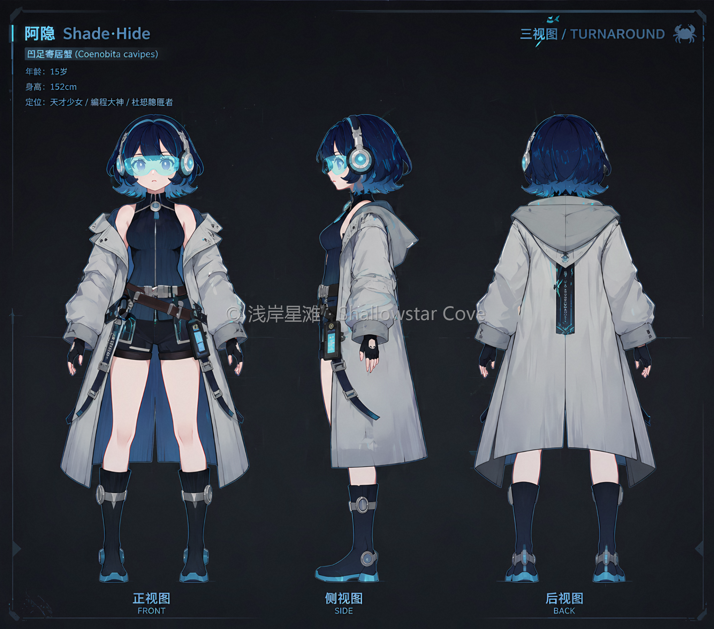
三视图
设定补充
🖼️ 21:9 角色展板

阿隐 · 赛博编程美学
🧠 概念与道具
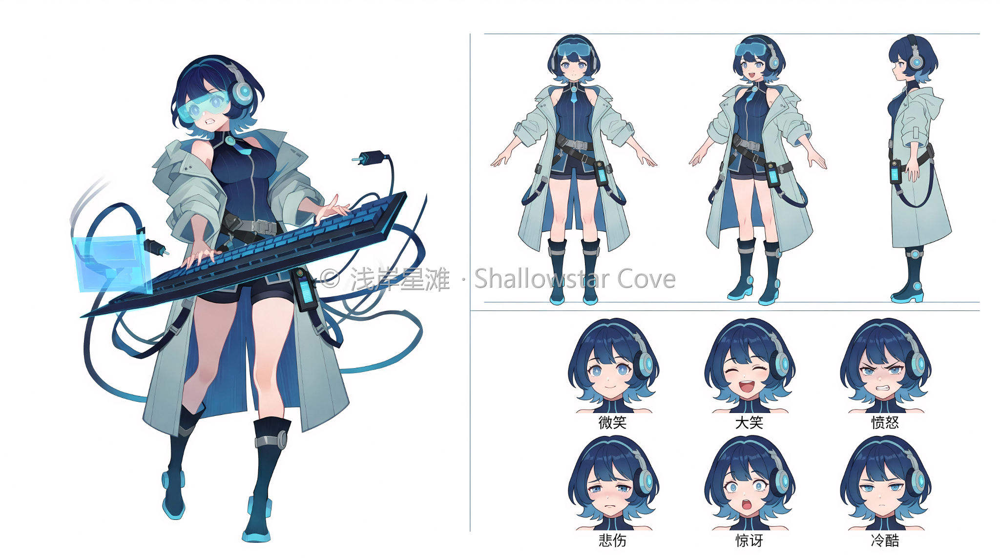
角色概念
代码道具设定
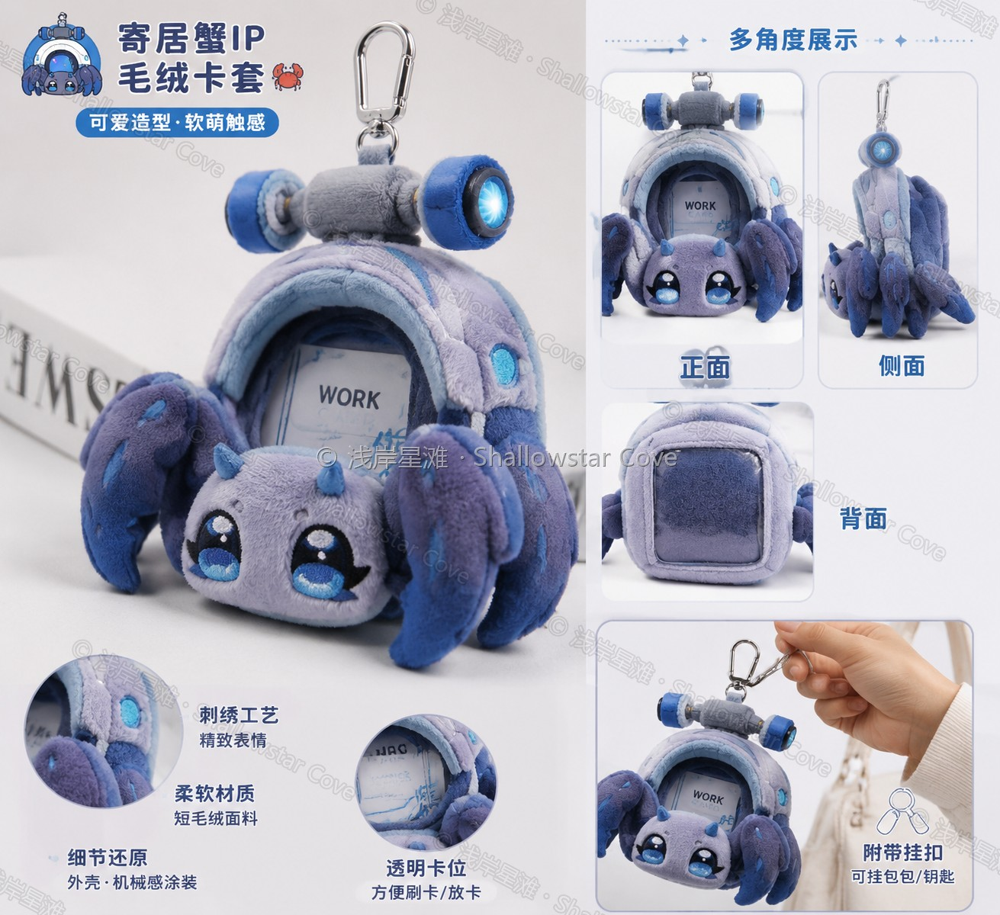
宠物与毛绒感
🛍️ 周边小物
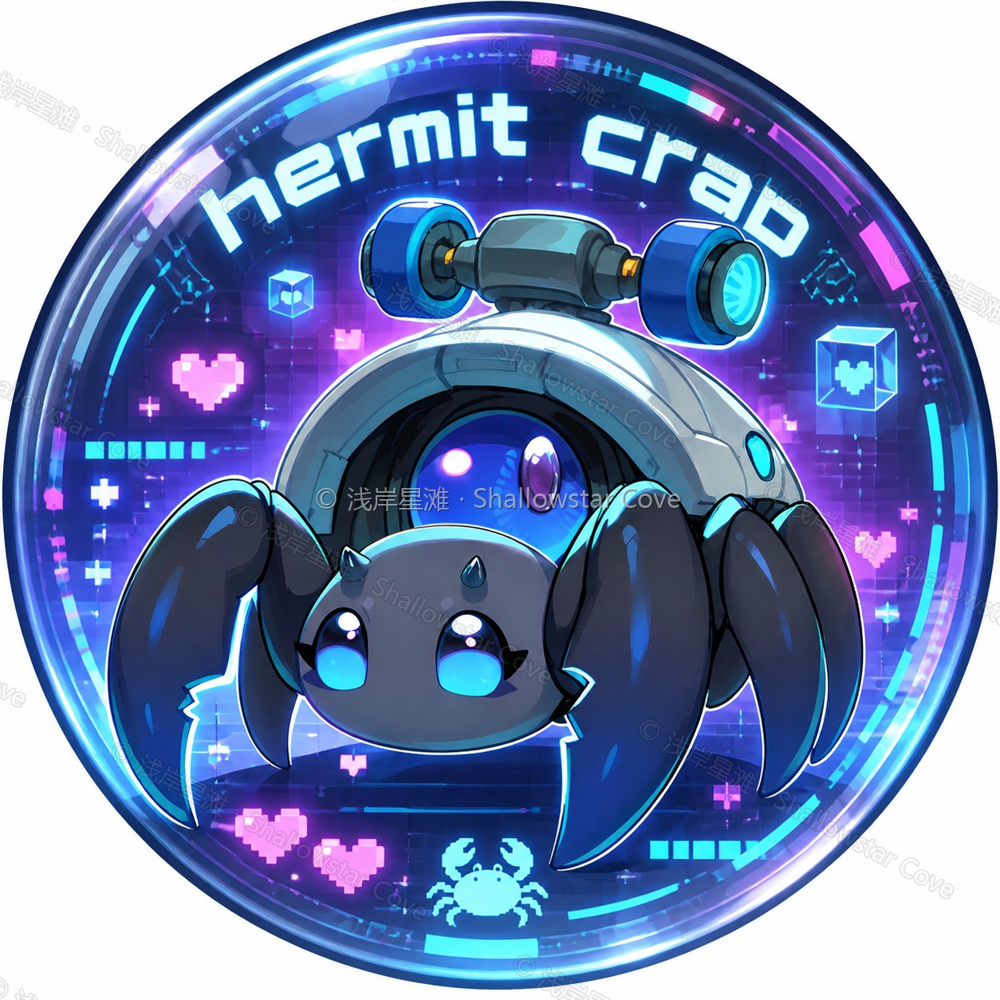
吧唧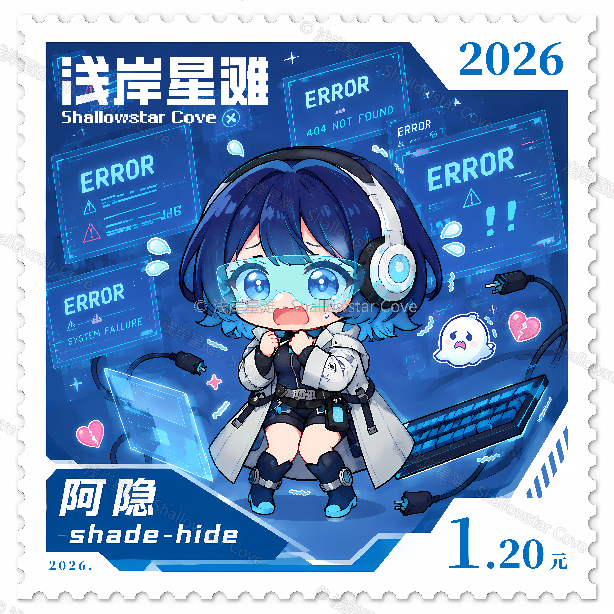
方形邮票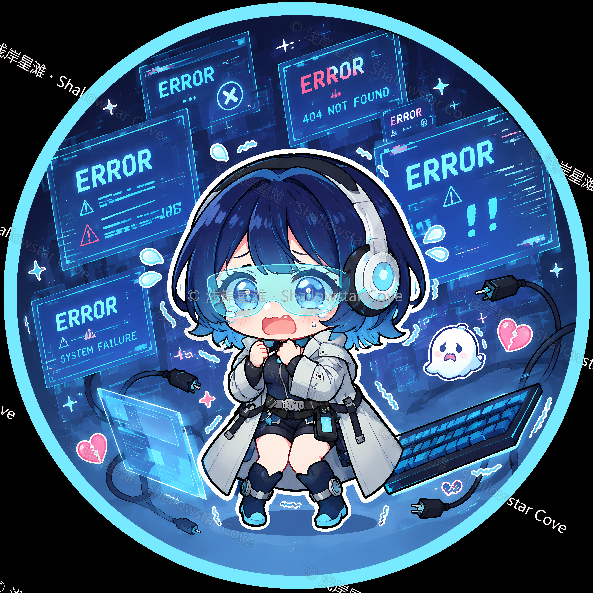
杯垫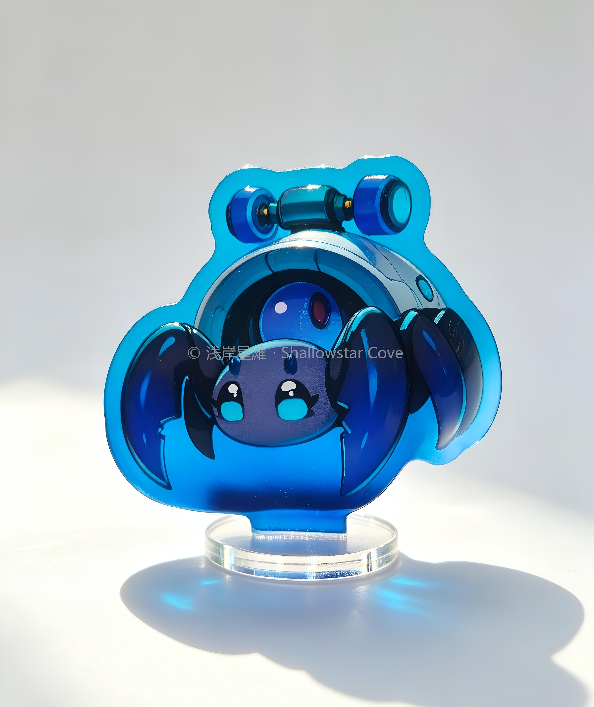
立牌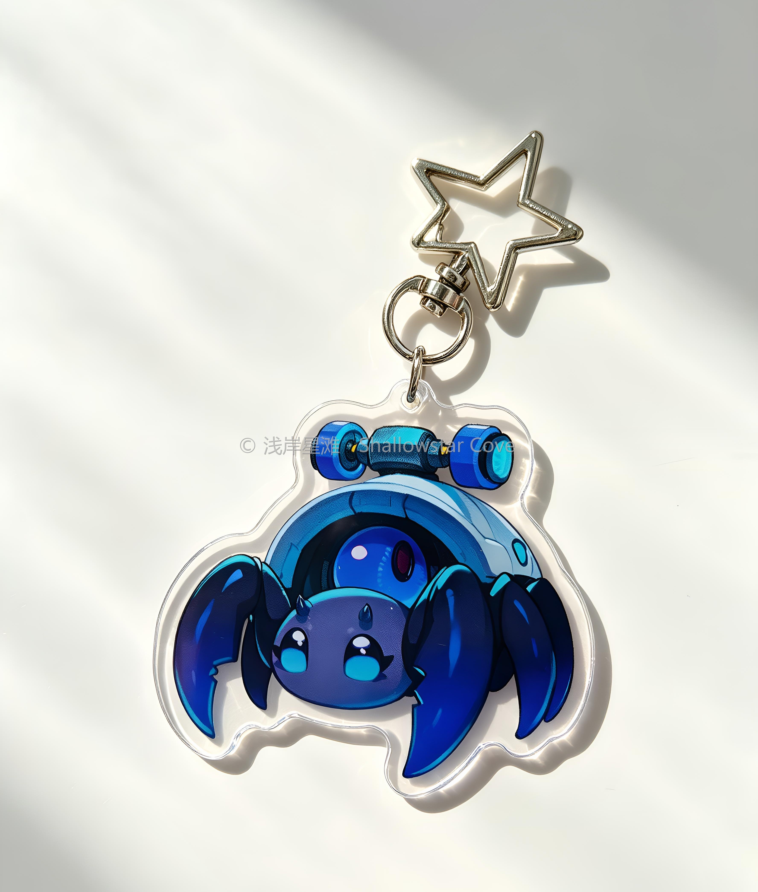
挂件毛绒
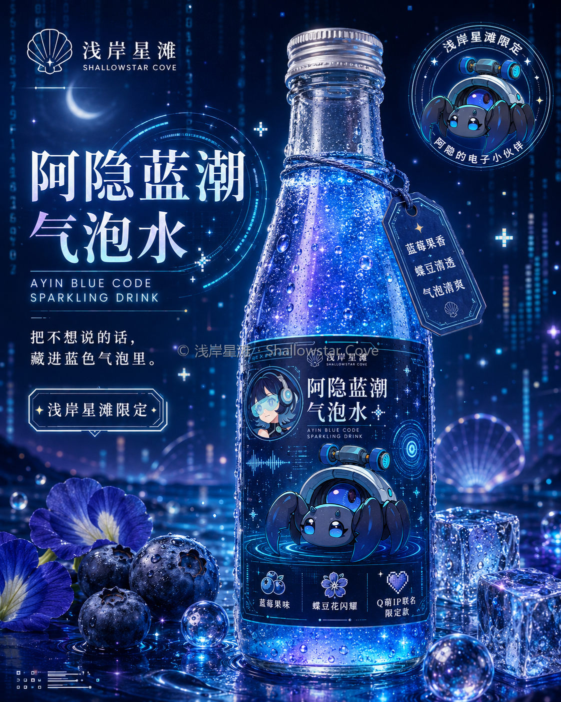
蓝莓气泡水阿隐限定气泡饮，蓝莓果香和清爽气泡感像屏幕蓝光一样醒神。